testing-cvd.RmdWe are testing that the existing NMFS color palettes are usable to someone with color vision deficiency (C.V.D.).
We’ll use an R package called dichromat
to approximate how these palettes might be perceived by someone with any
of the most common forms of C.V.D.: protanopia, deutanopia, and
tritanopia.
This analysis is based on this tutorial by Hannah Weller.
install.packages("dichromat")
install.packages("recolorize")
install.packages("gridExtra")
library(dichromat)
library(recolorize)
library(gridExtra)
show_cvd_pals <- function(palette) {
# Convert palette into three palettes approximating how someone with each type of C.V.D. would perceive the original palette
## protanopia
protan <- dichromat::dichromat(palette, type = "protan")
## deutanopia
deutan <- dichromat::dichromat(palette, type = "deutan")
## tritanopia
tritan <- dichromat::dichromat(palette, type = "tritan")
# Plot the palettes and compare
layout(matrix(1:4, nrow = 4))
par(mar = rep(1, 4))
recolorize::plotColorPalette(palette, main = "Trichromacy ('normal color vision')")
recolorize::plotColorPalette(protan, main = "Protanopia")
recolorize::plotColorPalette(deutan, main = "Deutanopia")
recolorize::plotColorPalette(tritan, main = "Tritanopia")
}
# import main palettes from nmfs_cols.R file
core_nmfs_pals <- list(
`oceans` = nmfs_cols("pale_sea_blue", "light_sea_blue", "processblue", "reflexblue", "national", "o50pblack"),
`waves` = nmfs_cols("pale_teal", "bright_teal", "westcoast", "dark_teal_green"),
`seagrass` = nmfs_cols("bright_seagrass", "ltgreen", "southeast", "dark_seagrass"),
`urchin` = nmfs_cols("bright_urchin", "vivid_urchin", "midatlantic", "dark_urchin"),
`crustacean` = nmfs_cols("bright_crustacean", "ltorange", "alaska", "dark_crustacean"),
`coral` = nmfs_cols("bright_coral", "vivid_coral", "pacificislands", "dark_coral"),
`regional` = nmfs_cols("national", "westcoast", "southeast", "midatlantic", "alaska", "pacificislands")
)
# Show comparisons for each palette
for (i in 1:length(core_nmfs_pals)) {
print(paste0(names(core_nmfs_pals)[i], " palette"))
show_cvd_pals(core_nmfs_pals[[i]])
}## [1] "oceans palette"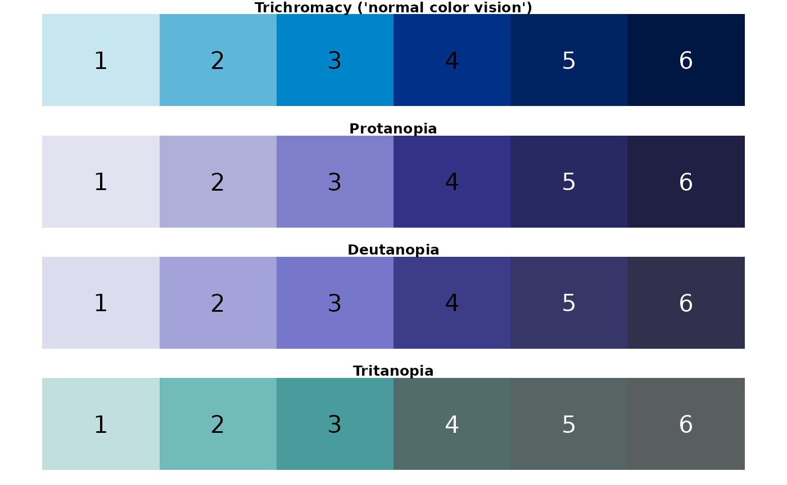
## [1] "waves palette"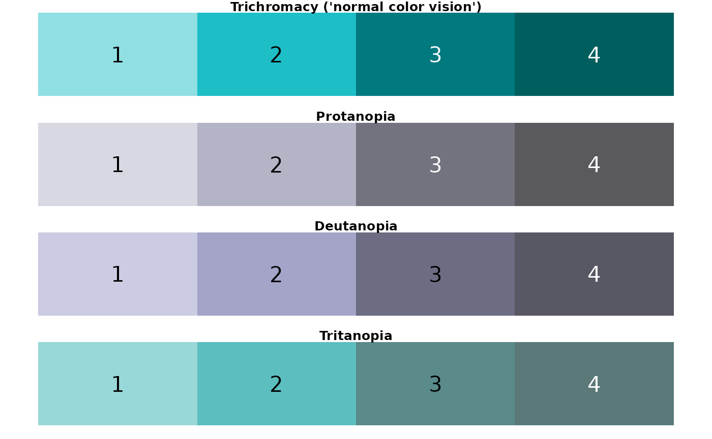
## [1] "seagrass palette"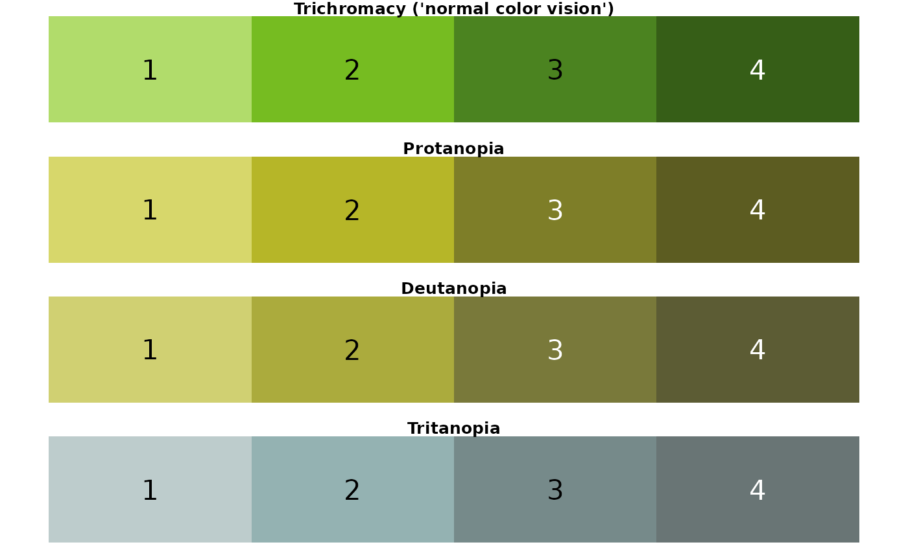
## [1] "urchin palette"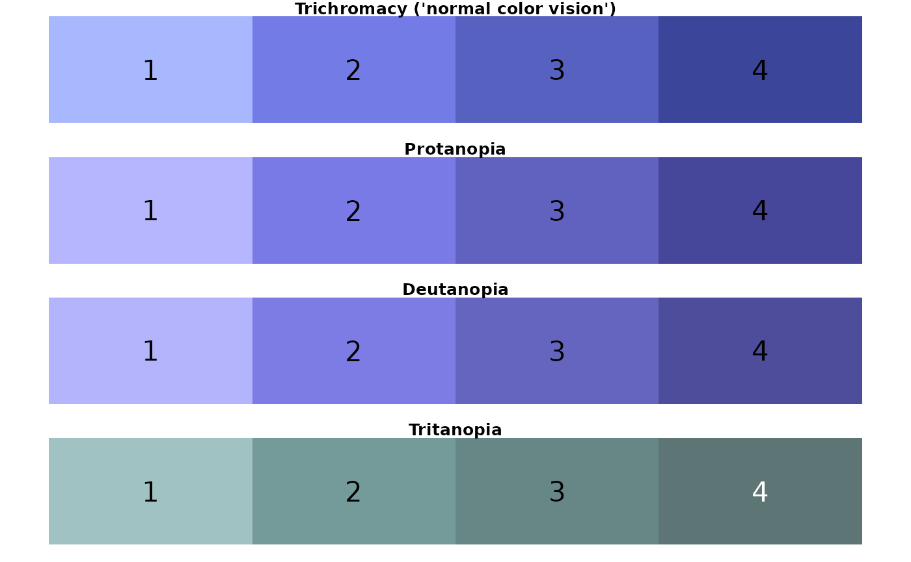
## [1] "crustacean palette"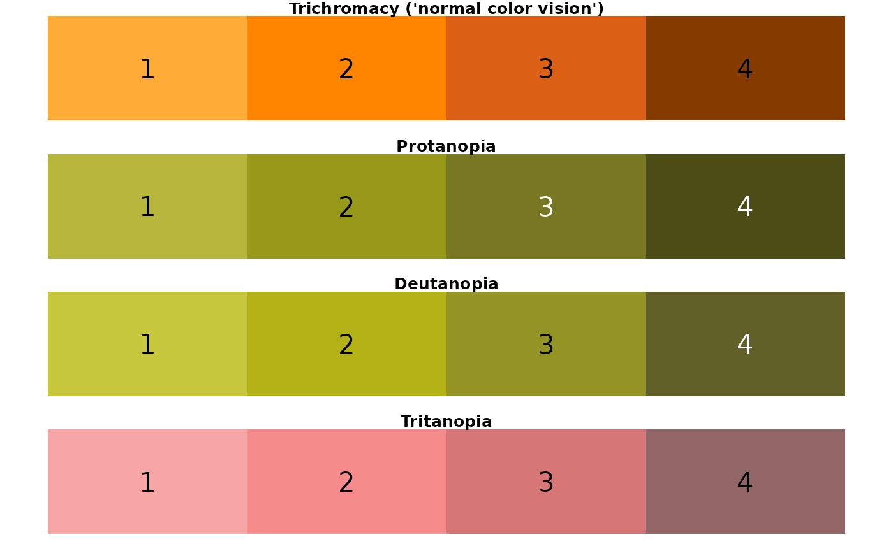
## [1] "coral palette"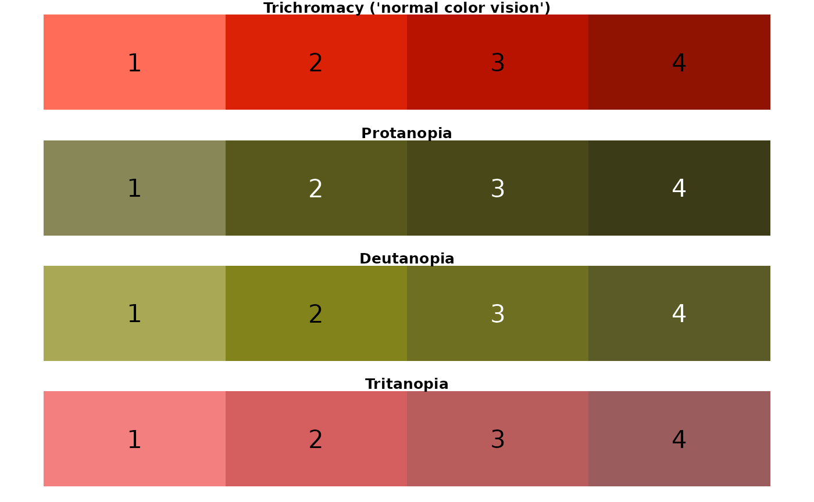
## [1] "regional palette"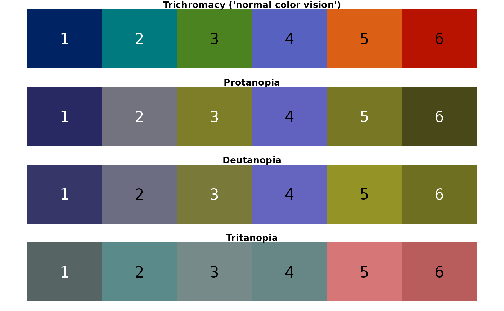
Conclusion: For someone with C.V.D., the regional palette could be challenging to discern. In particular, colors look very similar when viewed with the following perceptions: protanopia (3, 5); deutanopia (3, 5, 6); tritanopia (2, 3, 4).
# Option 1: using existing NMFS colors
regions_alt1 <- c(
"#002364", # "national"
"#00797F", # "westcoast"
"#76BC21", # "ltgreen"
"#5761C0", # "midatlantic"
"#DB6015", # "alaska"
"#B71300" # "pacificislands"
)
# Option 2: using some colors outside of the NMFS color set
regions_alt2 <- c(
"#016080", # new color
"#57aeb2", # new color
"#26DC61", # new color
"#8851D0", # new color
"#DB6015", # "alaska"
"#B71300" # "pacificislands"
)
alt_regional_pals <- list(
`Alternative regional palette 1` = regions_alt1,
`Alternative regional palette 2` = regions_alt2
)
for (i in 1:length(alt_regional_pals)) {
print(names(alt_regional_pals)[i])
show_cvd_pals(alt_regional_pals[[i]])
}## [1] "Alternative regional palette 1"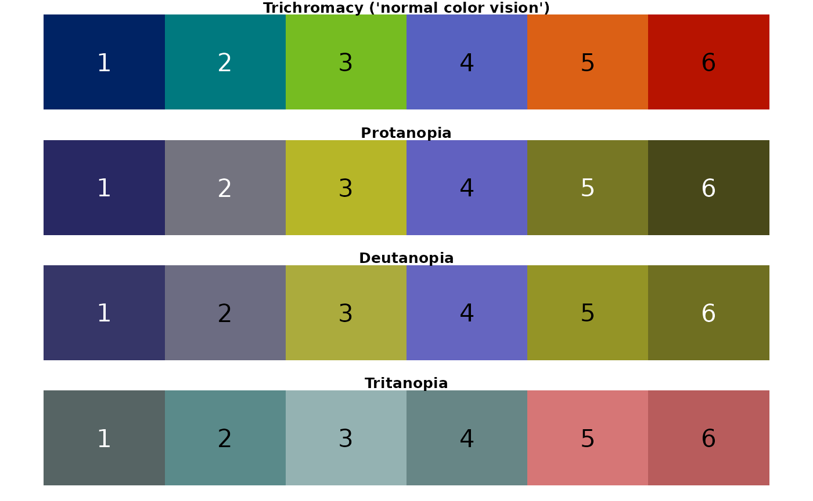
## [1] "Alternative regional palette 2"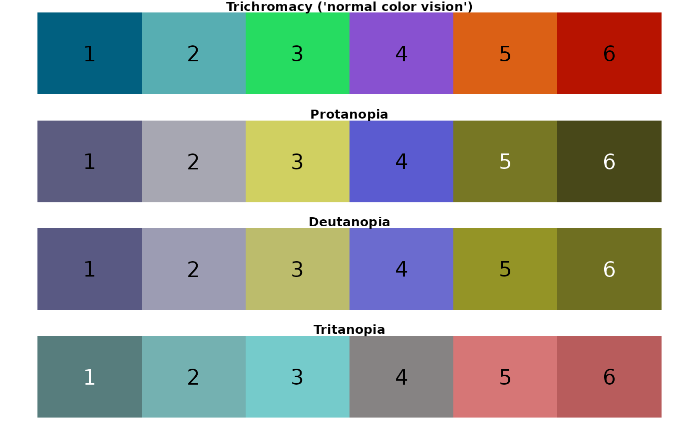
show_cvd_plots <- function(pal,
pal_name) {
test_data <- data.frame(
palette_color = c(
"1", "2", "3", "4", "5", "6",
"1", "2", "3", "4", "5", "6"
),
y = c(
1, 2, 3, 4, 5, 6,
2, 3, 4, 5, 6, 7
)
)
type <- "Trichromacy ('normal color vision')"
orig <- ggplot2::ggplot(
data = test_data,
aes(
x = palette_color,
y = y,
color = palette_color
)
) +
geom_point(
size = 4,
shape = 19
) +
geom_line(size = 1) +
theme_light() +
theme(legend.position = "none") +
labs(
subtitle = type,
x = "Palette color"
) +
scale_color_manual(values = pal)
orig
type <- "Protanopia"
protan <- orig +
labs(subtitle = type) +
scale_color_manual(values = dichromat::dichromat(pal, type = "protan"))
protan
type <- "Deutanopia"
deutan <- orig +
labs(subtitle = type) +
scale_color_manual(values = dichromat::dichromat(pal, type = "deutan"))
deutan
type <- "Tritanopia"
tritan <- orig +
labs(subtitle = type) +
scale_color_manual(values = dichromat::dichromat(pal, type = "tritan"))
tritan
four_plots <- gridExtra::grid.arrange(orig, protan, deutan, tritan,
top = pal_name
)
return(four_plots)
}
for (i in 1:length(alt_regional_pals)) {
show_cvd_plots(
pal = alt_regional_pals[[i]],
pal_name = names(alt_regional_pals)[i]
)
}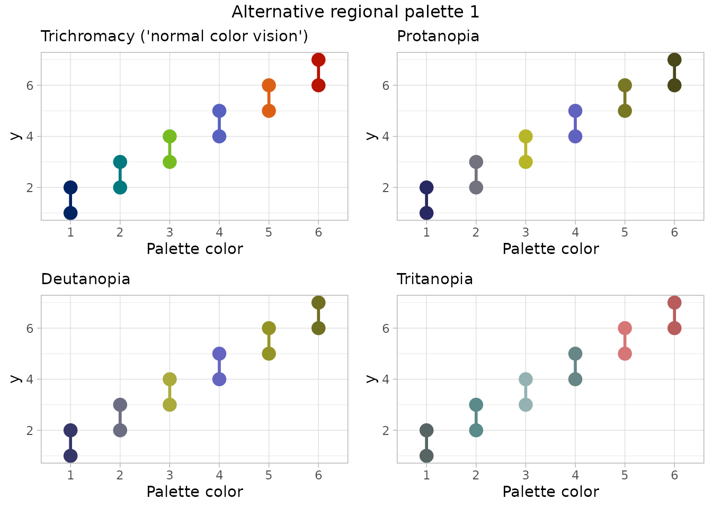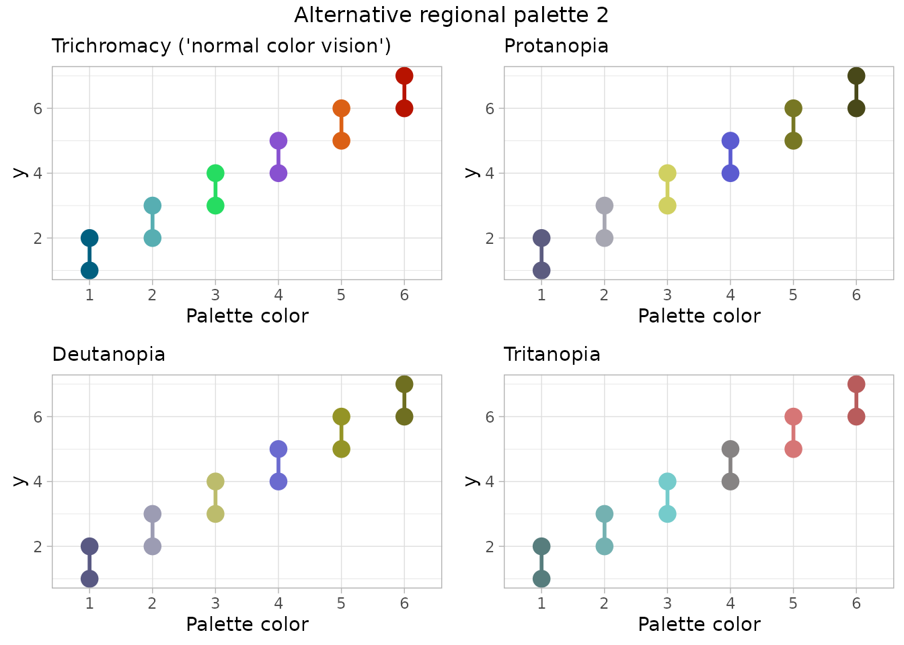
Conclusion: For someone with C.V.D., the alternative palette 1 shows colors 2 & 4 as very similar for tritanopia. Alternative palette 2 provides colors that seem distinguishable for all types of color perception, but multiple colors in this palette are outside the NMFS brand color set.
Both alternative regional palettes (“regional_alt1” and “regional_alt2”, respectively) are available in the package.
display_nmfs_palette("regional_alt1", 6)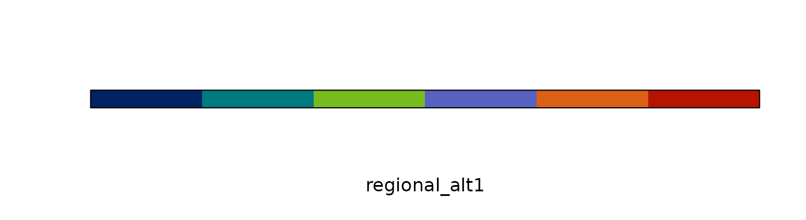
display_nmfs_palette("regional_alt2", 6)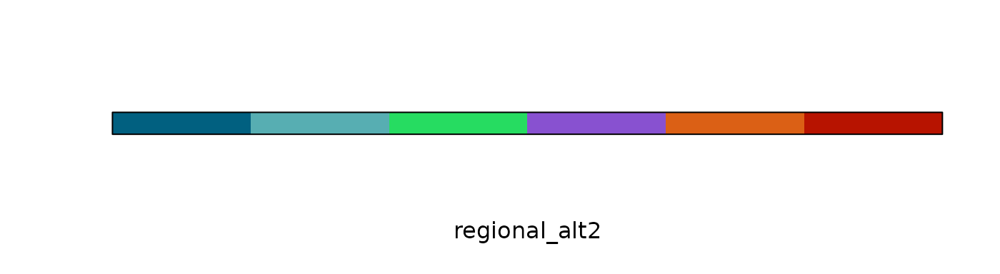